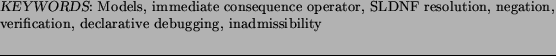

15 June 2004 30 November 2004 30 June 2005
LEE NAISH
Department of Computer Science and Software Engineering
University of Melbourne
Melbourne 3010
Australia
This paper describes a simpler way for programmers to reason about the correctness of their code. The study of semantics of logic programs has shown strong links between the model theoretic semantics (truth and falsity of atoms in the programmer's interpretation of a program), procedural semantics (for example, SLD resolution) and fixpoint semantics (which is useful for program analysis and alternative execution mechanisms). Most of this work assumes that intended interpretations are two-valued: a ground atom is true (and should succeed according to the procedural semantics) or false (and should not succeed). In reality, intended interpretations are less precise. Programmers consider that some atoms ``should not occur'' or are ``ill-typed'' or ``inadmissible''. Programmers don't know and don't care whether such atoms succeed. In this paper we propose a three-valued semantics for (essentially) pure Prolog programs with (ground) negation as failure which reflects this. The semantics of Fitting is similar but only associates the third truth value with non-termination. We provide tools to reason about correctness of programs without the need for unnatural precision or undue restrictions on programming style. As well as theoretical results, we provide a programmer-oriented synopsis. This work has come out of work on declarative debugging, where it has been recognised that inadmissible calls are important. This paper has been accepted to appear in Theory and Practice of Logic Programming.
